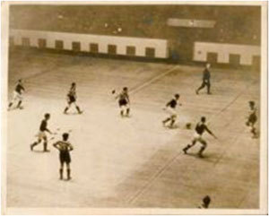

HISTORIA DEL FUTSALA
Esta disciplina también llamada fútbol de salón o microfútbol es un deporte que nació en el siglo XX en Uruguay. Es una variante del fútbol tradicional, retiene algunos elementos de este, pero también añade reglas específicas que son muy distintas a las del balompié.
El futsal nació específicamente en 1930 en Uruguay. Esto cuando un profesor de educación física, Juan Carlos Ceriani, introdujo una versión más reducida del fútbol para campos bajo techo. Esto mientras trabajaba en YMCAs (La Asociación Cristiana de Jóvenes).
Su primer libro de reglas fue publicado en 1933. Ceriani escribió las reglas y tomó como ejemplos los principios del fútbol, tales como la posibilidad de tocar el balón con todas las partes del cuerpo menos las manos. Pero, también tomó datos del baloncesto, como el número de jugadores (cinco) y la duración del encuentro (40 minutos). E incluso del wáter polo tomó las reglas del guardameta y del balonmano para el campo y el tamaño de las arquerías.
Se desarrolló originalmente para jugar en canchas de baloncesto. La idea fue crear un juego que se pareciera al fútbol, pero se pudiera jugar tanto en campo abierto como cerrado. Y se volvió muy popular en Uruguay después que este país ganara la Copa del Mundo de 1930, además de medallas olímpicas en los Juegos Olímpicos de 1924 y 1928.
